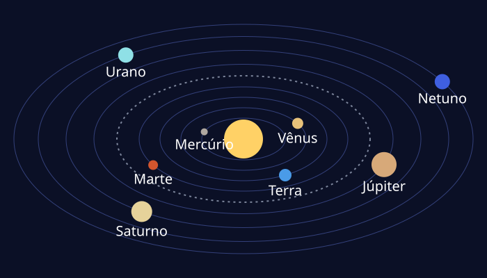
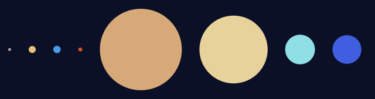
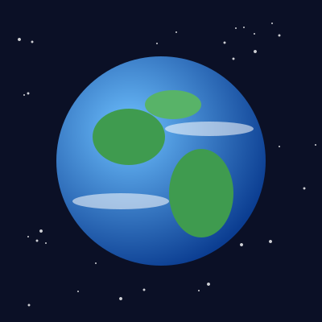
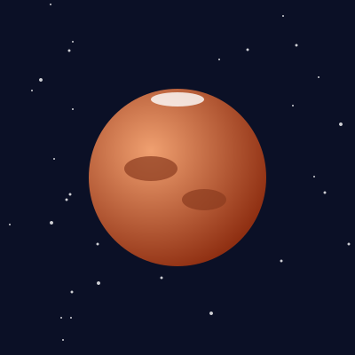
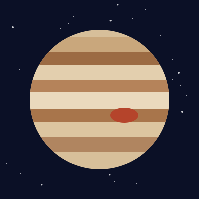
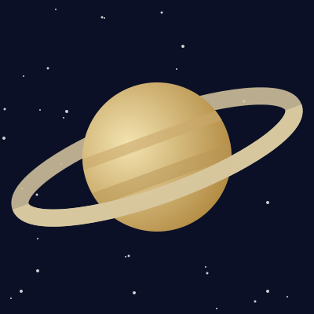
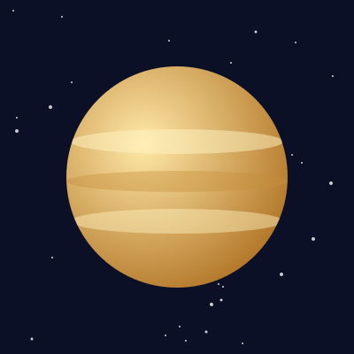
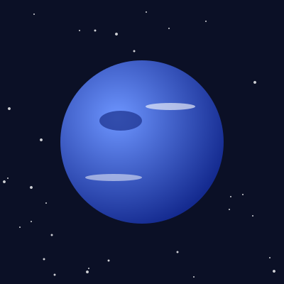

O Sistema Solar
O Sistema Solar é formado pelo Sol e por todos os corpos que giram ao redor dele: planetas, luas, planetas anões, asteroides e cometas. Ele se formou há cerca de 4,6 bilhões de anos, a partir do colapso de uma enorme nuvem de gás e poeira. Neste site você vai conhecer os principais componentes desse sistema.
O Sol, a estrela do sistema
O Sol é uma estrela classificada como anã amarela. Ele concentra cerca de 99,8% de toda a massa do Sistema Solar, e é por isso que sua gravidade é capaz de manter todos os outros corpos em órbita.
A temperatura na superfície do Sol é de aproximadamente 5.500 °C, enquanto no núcleo ela chega a cerca de 15 milhões de graus Celsius. Lá, o hidrogênio é transformado em hélio por meio da fusão nuclear, processo que libera a energia que ilumina e aquece os planetas. A luz do Sol leva pouco mais de 8 minutos para chegar até a Terra.
Os oito planetas
Atualmente, o Sistema Solar possui oito planetas. Em ordem de distância do Sol, eles são: Mercúrio, Vênus, Terra, Marte, Júpiter, Saturno, Urano e Netuno. Todos giram ao redor do Sol em órbitas em forma de elipse, aproximadamente no mesmo plano.

Planetas rochosos
Mercúrio, Vênus, Terra e Marte são os planetas mais próximos do Sol. Eles são relativamente pequenos e possuem superfície sólida, formada principalmente por rochas e metais. Por isso, são chamados de planetas rochosos ou terrestres.
Gigantes gasosos e gigantes de gelo
Júpiter e Saturno são os gigantes gasosos: são formados principalmente por hidrogênio e hélio e não possuem uma superfície sólida como a da Terra. Já Urano e Netuno são chamados de gigantes de gelo, pois, além de hidrogênio e hélio, contêm grande quantidade de substâncias como água, amônia e metano.

Júpiter é o maior planeta do Sistema Solar: seu diâmetro equivale a mais de 11 vezes o da Terra. Saturno é famoso por seus anéis, formados por incontáveis pedaços de gelo e rocha.
Distâncias no Sistema Solar
As distâncias no espaço são tão grandes que os astrônomos criaram uma unidade própria para medi-las: a unidade astronômica (UA). Uma UA equivale à distância média entre a Terra e o Sol, cerca de 149,6 milhões de quilômetros. A tabela abaixo mostra a distância média de cada planeta ao Sol.
| Planeta | Tipo | Distância (UA) |
|---|---|---|
| Mercúrio | Rochoso | 0,39 |
| Vênus | Rochoso | 0,72 |
| Terra | Rochoso | 1,00 |
| Marte | Rochoso | 1,52 |
| Júpiter | Gigante gasoso | 5,20 |
| Saturno | Gigante gasoso | 9,58 |
| Urano | Gigante de gelo | 19,2 |
| Netuno | Gigante de gelo | 30,05 |
Cinturão de asteroides e planetas anões
Entre as órbitas de Marte e Júpiter existe o cinturão de asteroides, uma região com milhões de corpos rochosos de vários tamanhos. O maior objeto dessa região é Ceres, classificado como planeta anão.
Em 2006, a União Astronômica Internacional definiu o que é um planeta e criou a categoria dos planetas anões. Com essa decisão, Plutão deixou de ser considerado planeta e passou a ser um planeta anão. Plutão fica em uma região além da órbita de Netuno chamada cinturão de Kuiper, repleta de corpos gelados.
Curiosidades
Vênus é o planeta mais quente do Sistema Solar, com temperatura de cerca de 465 °C, mesmo estando mais longe do Sol que Mercúrio. Isso acontece por causa de sua atmosfera densa, rica em gás carbônico, que provoca um intenso efeito estufa.
Urano gira praticamente "deitado": seu eixo de rotação é inclinado cerca de 98 graus em relação ao plano de sua órbita. Já a Terra é o único corpo do Sistema Solar em que se conhece a existência de vida, e cerca de 71% de sua superfície é coberta por água.
Galeria dos planetas
Conheça alguns dos planetas em ilustrações feitas pelo autor do site (as cores e os detalhes são aproximados e os tamanhos não estão em escala).






Referências
- NASA. Solar System Exploration. Disponível em: https://science.nasa.gov/solar-system/. Acesso em: 2026.
- NASA. Planetary Fact Sheet. Disponível em: https://nssdc.gsfc.nasa.gov/planetary/factsheet/. Acesso em: 2026.
- União Astronômica Internacional (IAU). IAU 2006 General Assembly: Result of the IAU Resolution votes. Disponível em: https://www.iau.org/news/pressreleases/detail/iau0603/. Acesso em: 2026.
- Todas as ilustrações (logotipo, esquemas e planetas) foram criadas pelo autor do site, sem uso de imagens de terceiros.
- Normalização de estilos: modern-normalize, licença MIT. Disponível em: https://github.com/sindresorhus/modern-normalize.
- Fontes: Montserrat e Open Sans, via Google Fonts.